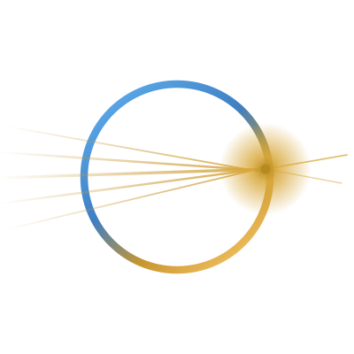

Every hollow-core deployment must join the installed solid-fibre world. This digital twin predicts the insertion loss of that junction — for any fibre pair, adapter strategy and misalignment — using a Gaussian mode-overlap model validated against published interconnection results.
Model: Marcuse Gaussian overlap + Fresnel + HCF mode-shape term. Anchors: ~2 dB naive butt · 0.15–0.5 dB adapted · 1.56 µs/km air advantage.
Light in air runs at 99.97% of c; in silica, 68%. Over this route the round-trip saving above is what a trading venue, an AI-inference cluster or a real-time system buys with hollow-core — but only if the junctions don't burn the link budget. That is the layer Cavus owns.